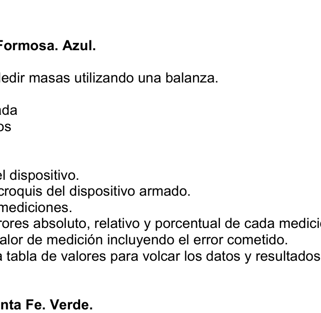
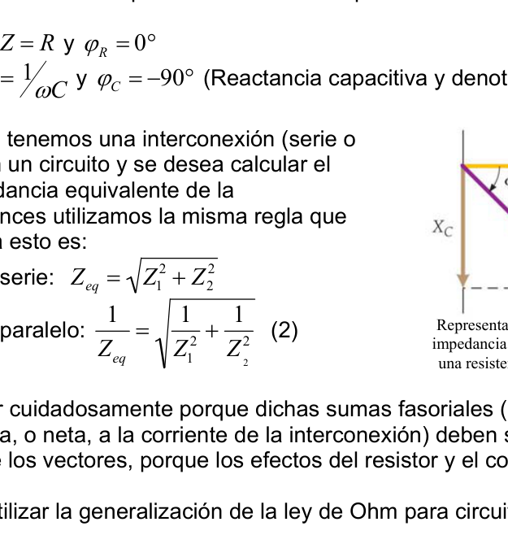

Capacitance Measurement RC Circuit
PE22. Rosario, Santa Fe. Verde. Titulo: “Medición de la capacidad de un elemento circuital”
Objetivo: i. Medir la capacidad (C) del capacitor que se encuentra en paralelo con una resistencia (ver figura 1). ii. Expresar todas las mediciones realizadas con su correspondiente error. iii. Calcular la incerteza total (∆C).
Desarrollo Teórico Consideremos un circuito compuesto por tres elementos conectados en serie: una fuente de tensión, un resistor, y un tercer elemento que consta de una resistencia y un capacitor en paralelo de la figura 1. Dependiendo de la forma de onda de la tensión (voltaje) de alimentación, las magnitudes que caracterizan al circuito se comportaran de una manera diferente; es decir, la forma de energizar al circuito (ya sea tensión continua o tensión alterna) determinarán distintos valores de corriente y diferencia de potencial en cada elemento y además las impedancias2 de los elementos del circuito tendrán valores diferentes.
Tensión Continua Si la fuente provee una tensión continua la corriente que se establece en el circuito también ha ser continua, con la característica de que todo efecto capacitivo (luego de un tiempo prudente) desaparece esto quiere decir, que la impedancia del circuito es puramente resistiva. Esto ocurre porque una vez cargado un capacitor hasta su tensión pico, no circula mas corriente por él. Ahora bien dado que el paralelo también presenta efectos resistivos, estos seguirán estando presentes; por lo tanto la relación entre la tensión de fuente del circuito y la corriente que circula por el mismo no es mas que la ley de ohm, es decir: I = V RTotal (1)
2 La palabra impedancia (representada por la letra Z) indica la oposición general del circuito al paso de corriente. Las palabras reactancia y resistencia se reservarán para la oposición de los elementos individuales, es decir para los capacitores y resistores respectivamente. Figura 1
Donde RTotal representa la resistencia total que presenta el circuito.
Tensión Alterna
Cuando la fuente de tensión provee una onda alterna, la situación es diferente. Si bien
la corriente del circuito mantiene la misma frecuencia y la forma de onda que la
tensión, presenta un defasaje con respecto a la tensión de fuente y su modulo
dependerá de los parámetros del circuito. La relación de fases entre la corriente y el
voltaje es distinta para cada elemento del circuito y depende de su impedancia. En
consecuencia, se necesita un método gráfico especial para
determinar la oposición general a la corriente en el circuito.
El método emplea un diagrama de fase, como el que se
puede ver en la figura. Para un elemento dado a la
componente resistiva y reactiva se le atribuyen propiedades
semejantes a los vectores, y sus magnitudes se representan
mediante flechas llamadas fasores. Sea un conjunto de ejes
cartesianos x-y, la impedancia de la resistencia se grafica en
el eje x positivo (esto es a 0°), ya que la diferencia de fases
entre voltaje y corriente para un resistor es cero. Y la
impedancia que presenta el capacitor (llamada reactancia capacitiva) se grafica a lo
largo del eje y negativo, y refleja una diferencia de -90° en la fases, ya que para un
capacitor el voltaje se retrasa respecto a la corriente por un cuarto de ciclo.
En concordancia con lo anterior podemos escribir la impedancias de los siguientes
elementos:
• Resistencia: Z = R y ϕR = 0°
• Capacitor: Z = 1ωC y ϕC = −90° (Reactancia capacitiva y denotada como Xc)
En otras ocasiones tenemos una interconexión (serie o
paralelo) de dos en un circuito y se desea calcular el
módulo de la impedancia equivalente de la
interconexión, entonces utilizamos la misma regla que
para las resistencia esto es:
• Conexión en serie: Zeq =
Z1
2 + Z2
2
• Conexión en paralelo: 1
Zeq
1 Z1 2 + 1 Z 2 2 (2)
Esto se debe hacer cuidadosamente porque dichas sumas fasoriales (que representa
la oposición efectiva, o neta, a la corriente de la interconexión) deben sumarse de la
misma manera que los vectores, porque los efectos del resistor y el condensador no
están en fase.
Luego podremos utilizar la generalización de la ley de Ohm para circuitos en régimen
alterno:
Vrms = IrmsZ
Donde el sufijo rms indica que son valores eficaces de tensión y corriente, y es lo que
nos arroja cualquier multímetro digital en una medición de tensión o corriente alterna.
Materiales
• Fuente de tensión continua 6V y 12V
• Fuente de tensión alterna 20V
• 2 Multímetros, a utilizar como Voltímetros.
• Cables conectores.
• Plaqueta con el circuito donde se encuentra el dispositivo a medir:
Representación fasorial de una
impedancia serie compuesta por
una resistencia y un capacitor.
Procedimiento
Antes de energizar al circuito llame a un docente para que verifique sus conexiones.
La impedancia del paralelo que comprende al capacitor C con la resistencia RP, según
con la ecuación (2) resulta ser:
1
ZP
1 RP 2 + 1 (1/ωC)2 1 ZP
1 RP 2 + (ωC)2 = Ieq Veq (3) Si de alguna forma podemos medir la corriente que atraviesa el paralelo y su tensión, podríamos determinar la impedancia del paralelo, pero para calcular el valor de la capacidad tenemos que conocer cuanto vale la resistencia RP. Como debemos medir dos tensiones, en lugar de una tensión y una corriente, se medirá la tensión en bornes de una resistencia adicional (en serie con la impedancia paralela) y luego podremos calcular la corriente. Ensayo a tensión continua Con este ensayo podremos calcular cuando vale la resistencia RP ya que, como dijimos en la introducción teórica, no hay efectos capacitivos. (Notar en la expresión 3 que ω = 0 al tratarse de una tensión continua) Recordando la formula de la tensión sobre una resistencia de un divisor resistivo y despejando se obtiene que: RP = Rad . VP Vad
Donde VP es la tensión de la impedancia, Vad la tensión que cae en la resistencia adicional y Rad es una resistencia adicional que ud debe agregar al paralelo. Puede optar por 4 resistencias adicionales y debe elegir criteriosamente para reducir el error total de la medición.
Conexionado:
Resistencias
adicionales
Ensayo a tensión alterna Como segunda instancia debe medirse la impedancia utilizando una fuente de tensión alterna. Una vez obtenida esta puede despejarse el valor de la capacidad utilizando la formula (3). De la misma forma que en el ensayo a tensión continua, y recordando la fórmula del divisor de tensión tenemos que: ZP = Zad . VZ Vad ZP = Rad . VZ Vad
Con los valores de resistencia e impedancia del paralelo, se puede despejar de (3) el valor de la capacidad que deseamos obtener.
Conexionado:
Consideraciones Importantes: • Configure correctamente el multímetro para la medición que desea realizar (tensión alterna o continua) • Detalle claramente todas las expresiones usadas y los cálculos realizados. • Recuerde ser ordenado en el cálculo de los errores. • Llame al docente responsable antes de enchufar cualquier conexión a una funte de tensión.
Especificación Técnica de los instrumentos: • Rango medición tensión continua 200V, 20V, 2000mV, 200mV • Rango medición tensión alterna 750V, 200V • El error del multimetro se expresa como un porcentaje de la lectura más número de dígitos menos significativos. Para los intrumentos suministrados considerar (e = 1%.lectura + 2 dig)
Especificación Técnica de las resistencias: • Todas las resistencias tienen una tolerancia del 1% Conclusiones Elaborar una memoria sobre el desarrollo del trabajo practico identificando las mayores fuentes de error y como podría mejorarse; e indicar hipótesis y consideraciones usadas.


Topic: Circuits Metodi: Equivalent Circuit Reduction, Experimental Data Analysis, Error Propagation Competenze: Physical Reasoning, Experimental Data Analysis, Mathematical Modeling Objects: Capacitor, Resistor, Battery Fonte: Testo (PDF) — p.3
Capacitance Measurement RC Circuit
PE22. Rosario, Santa Fe. Verde. Titolo: Messa della capacità di un elemento di circuito
Obiettivo: i. Misurare la capacità (C) del condensatore che si trova in parallelo con una resistenza (vedere figura 1). ii. Esprimere tutte le misurazioni effettuate con il suo errore corrispondente. iii. Calcolare l’incertezza totale (∆C).
Sviluppo teorico Consideriamo un circuito composto da tre elementi collegati in serie: una fonte di tensione, una resistenza, e un terzo elemento che consiste in una resistenza e un Capacitore parallelo di figura 1. A seconda della forma dell’onda di tensione (voltaggio) di alimentazione, le magnitudini che caratterizzano il circuito si comportano In un modo diverso, cioè il modo di energizzare il circuito (sia tensione (continua o a volta all’alternata) determinano differenti valori di corrente e di differenza di Potenziali in ogni elemento e impedanze2 degli elementi del circuito avranno valori diversi.
Tensione continua Se la fonte fornisce una tensione continua il corrente che si stabilisce nel circuito deve essere anche continuo, con la caratteristica che tutto L’effetto capacitivo (dopo un tempo prudente) scompare Questo significa che l’impedenza del circuito è puramente resistente. Questo accade perché una volta caricato un capacitore fino al suo picco di tensione, non circola più corrente attraverso di esso. Ora
- visto che il parallelo presenta anche effetti resistenti, La relazione è stata pubblicata nel corso del periodo di due anni. tra la tensione di sorgente del circuito e il corrente che circola per questo è solo la legge di Ohm, cioè: I = V RTtotal (1)
2 L’impedenza (representata dalla lettera Z) indica l’opposizione generale del circuito al passo corrente. Le Le parole reattività e resistenza si riserveranno all’opposizione degli elementi individuali, cioè ai Capacitatori e resistori rispettivamente. Figura 1
In cui RTotal rappresenta la resistenza totale del circuito. Voltaggio alternato Quando la fonte di tensione fornisce un’onda alternata, la situazione è diversa. - Si ’ , certo . Il corrente del circuito mantiene la stessa frequenza e forma d’onda che la corrente. tensione, presenta un defasaggio rispetto alla tensione sorgente e al suo modulo dipenderà dai parametri del circuito. Il rapporto di fase tra corrente e La voltazione è diversa per ogni elemento del circuito e dipende dalla sua impedenza. En In questo modo, è necessario un metodo grafico speciale per determinare l’opposizione generale al corrente nel circuito. Il metodo utilizza un diagramma di fase, come quello che viene illustrato in come si vede nella figura. Per un elemento dato alla Componente resistente e reagente sono attribuite proprietà simili ai vettori, e le loro magnitudine sono rappresentate con frecce chiamate fasore. Essere un insieme di assi Cartesiani x-y, l’impedenza della resistenza è graficata in l’asse x positivo (questo è a 0°), poiché la differenza di fasi tra voltage e corrente per una resistenza è zero. Y la L’impedenza presentata dal capacitore (chiamata reazione capacitiva) è graficata al lungo l’asse e negativo, e riflette una differenza di -90° nelle fasi, poiché per un Capacitore la tensione è ritardata rispetto al corrente per un quarto di ciclo. In base a quanto precede possiamo scrivere le impedanze di: elementi: • Resistenza: Z = R e φR = 0° • Capacitore: Z = 1ωC e φC = −90° (Reazione capacitiva e denominata come Xc)
Altre volte abbiamo un’interconnessione (serie o
parallelo) di due in un circuito e si desidera calcolare il
modulo di impedenza equivalente della
Interconnessione, quindi usiamo la stessa regola che
per le resistenze questo è:
• Connessione in serie: Zeq =
Z1
2 + Z2
2
• Connessione parallela: 1
Zeq
1 Z1 2 + 1 Z 2 2 (2)
Questo deve essere fatto con attenzione perché tali somme fasoriali (che rappresenta La resistenza effettiva, o netta, al flusso di interconnessione) devono essere aggiunte alla lo stesso modo che i vettori, perché gli effetti della resistenza e del condensatore non sono in fase. Poi possiamo usare la generalizzazione della legge di Ohm per i circuiti in regime. Alterna: VRS = IRMSZ Dove il suffizio rms indica che sono valori efficaci di tensione e corrente, e che è ci getta qualsiasi multimetro digitale in una misurazione di tensione o corrente alternata. Materiali • Fonte di tensione continua 6V e 12V • Fonte di tensione alternativa 20V • 2 multimetro, da usare come voltimetri. • Cable di connessione. • Placca con il circuito in cui si trova il dispositivo da misurare: Rappresentazione facciale di una Impedenza serie composta da una resistenza e un capacitore.
Procedura Prima di accendere il circuito, chiami un insegnante per verificare le connessioni. L’impedenza parallela che comprende il condensatore C con la resistenza RP, secondo con l’equazione (2) si rivela che: 1 ZP
1 RP 2 + 1 (1/ωC)2 1 ZP
1 RP 2 + (ωC) 2 = Ieq Veq (3) Se in qualche modo possiamo misurare il corrente che attraversa il parallelo e la sua tensione, Potremmo determinare l’impedenza del parallelo, ma per calcolare il valore di La capacità di questo tipo di resistenza è che dobbiamo sapere quanto vale la resistenza RP. Come dobbiamo misurare La tensione è di un’unità di tensione di un’unità di tensione di un’unità di tensione di un’unità di tensione di un’unità di tensione di un’unità di tensione di un’unità di tensione di un’unità di tensione di un’unità di tensione di un’unità di tensione di un’unità di tensione di un’unità di tensione di un’unità di tensione di un’unità di tensione di un’unità di tensione di un’unità di tensione di un’unità di tensione di un’unità di tensione di un’unità di tensione di un’unità di tensione di tensione di un’unità di tensione di tensione di un’unità di tensione di tensione di un’unità di tensione di tensione di un’unità di tensione di tensione di un’unità di tensione di tensione di tensione di un tensione di tensione di tensione di un tensione di tensione di tensione di tensione di un tensione di tensione di tensione di tensione di tensione di tensione di un tensione di tensione di tensione di tensione di tensione di tensione di tensione di tensione di tensione di un tensione di tensione di tensione di tensione di tensione di tensione di tensione di tensione di tensione di tensione di tensione di tensione di tensione di tensione di tensione di tensione di tensione di tensione di tensione di tensione di tensione di tensione di tensione di tensione di tensione di tensione di tensione di tensione di tensione di tensione di tensione di tensione di tensione di tensione di tensione di tensione di tensione di tensione di tensione di tensione di tensione di tensione di tensione di tensione di tensione di tensione di tensione di tensione di tensione di tensione di tensione di tensione di tensione di tensione di tensione di tensione di tensione di tensione di tensione di tensione di tensione di tensione di tensione di tensione di tensione di tensione di tensione di tensione di tensione di tensione di tensione di tensione di tensione di tensione di tensione di tensione di tensione di tensione di tensione di tensione di una resistenza aggiuntiva (in serie con l’impedenza parallela) e poi possiamo Calcolare la corrente. Prova a tensione continua Con questo test possiamo calcolare quando vale la resistenza RP poiché, come Come abbiamo detto nell’introduzione teorica, non ci sono effetti capacitivi. (Nota nell’espressione 3 che ω = 0 in quanto tensione continua) Ricordando la formula della tensione su una resistenza di un divisore resistente e la chiusura ottiene che: RP = Rad . VP Vad
Dove VP è la tensione di impedenza, Vad la tensione che cade nella resistenza Rad è un’ulteriore resistenza che si deve aggiungere al parallelo. Potrebbe Oggettare 4 resistenze aggiuntive e scegliere con discrezione per ridurre l’errore totale della misurazione.
Connesso:
Resistenze ulteriori
Prova a tensione alternativa In secondo luogo, l’impedenza deve essere misurata utilizzando una fonte di tensione
- Si alterna. Una volta ottenuto, si può chiarire il valore della capacità utilizzando formula (3). Proprio come nel test a tensione continua, e ricordando la formula di divisore di tensione abbiamo: ZP = Zad . VZ Vad ZP = Rad . VZ Vad
Con i valori di resistenza e impedenza parallele, si può eliminare (3) il il valore della capacità che vogliamo ottenere.
Connesso:
Principali considerazioni: • Configura correttamente il multimetro per la misura che desideri realizzare (tensione continua o alternativa) • Dettalia chiaramente tutte le espressioni usate e i calcoli realizzati. • Ricordate di essere ordinati nel calcolo degli errori. • Chiama l’insegnante responsabile prima di collegare qualsiasi collegamento a una fonte di tensione.
Specificamento tecnico degli strumenti: • Rango di misurazione di tensione continua 200V, 20V, 2000mV, 200mV • Rango di misurazione di tensione alternativa 750V, 200V • L’errore del multimetro è espresso come percentuale di lettura più numeri meno significativi. Per gli strumenti I dati di cui sono stati forniti considerano (e = 1%. lettura + 2 dig)
Specifica tecnica delle resistenze: • Tutte le resistenze hanno un’ampia tolleranza dell’1% Conclusioni Elaborare un memorandum sullo sviluppo del lavoro pratico identificando le le maggiori fonti di errore e come potesse essere migliorato;
- le considerazioni usate.
Topic: Circuits Metodi: Equivalent Circuit Reduction, Experimental Data Analysis, Error Propagation Competenze: Physical Reasoning, Experimental Data Analysis, Mathematical Modeling Objects: Capacitor, Resistor, Battery Fonte: Testo (PDF) — p.3
The following information is provided by the Commission in the Official Journal of the European Union:
PE22. Rosario, Santa Fe. Green, please. Title: Measurement of the capacity of a circuit element
The objective: i. Measure the capacitor capacity (C) which It is parallel to a The following conditions are met: ii. Express all measurements made with its corresponding error. (iii) the following: Calculate the total uncertainty (∆C).
Theoretical development Consider a circuit composed of three connected elements in series: a The power supply, a resistor, and a third element consisting of a resistor and a The power output of the engine shall be calculated by the following formula: Depending on the voltage waveform (voltage) of power, the magnitude characterizing the circuit would behave The electrical energy is generated by the electrical energy (i.e. the voltage) of the electrical circuit. The current and difference values of the current and the difference between the current and the current will be determined by the The potential of each element and the impedance of the elements of the circuit They’ll have different values.
Continuous tension If the source provides a continuous voltage the current is set in the circuit It’s also going to be continuous, with the characteristic that everything The capacitive effect (after a reasonable time) disappears This means that the impedance of the circuit is purely Resistant. This happens because once a capacitor is loaded until its peak voltage, no current circulates through it. Now . As the parallel also has resistive effects, These will continue to be present; therefore the relationship between the circuit’s source voltage and the current circulating So it’s just the law of ohm, which is: I = V RTtotal (1)
2 The word impedance (represented by the letter Z) indicates the general opposition of the circuit to the current flow. The The words reactance and resistance are reserved for the opposition of the individual elements, i.e. for the capacitors and resistors respectively. Figure 1
Where RTotal represents the total resistance presented by the circuit. Alternating voltage When the voltage source provides an alternating wave, the situation is different. Well , I ‘m not . The current in the circuit maintains the same frequency and waveform as the current in the circuit. The voltage of the source voltage and its modulation are not as high as the current. It will depend on the parameters of the circuit. The phase relationship between current and the The voltage is different for each circuit element and depends on its impedance. En Consequently, a special graphic method is needed for determine the general current resistance in the circuit. The method uses a phase diagram, such as the one below. You can see it in the figure. For an element given to the Resistive and reactive components are attributed properties They’re like vectors, and their magnitudes are represented. by arrows called razors. Be a set of axes Cartesian x-y, the impedance of the resistance is plotted in the positive x-axis (this is 0°), since the phase difference The voltage and current between a resistor is zero. Y la The capacitor impedance (called capacitive reactance) is plotted at the The axis length and negative, and reflects a difference of -90° in phases, since for a capacitor voltage is delayed relative to current by a quarter cycle. In accordance with the above we can write the impedances of the following The following elements: • Resistance: Z = R and φR = 0° • Capacitor: Z = 1ωC and φC = −90° (Capacitory response and denoted as Xc)
Other times we have an interconnection (series or
parallel) of two in a circuit and the calculation of the
The module of the equivalent impedance of the
Interconnection, then we use the same rule as
For resistance this is:
• Serial connection: Zeq =
Z1
2 + Z2
2
• Parallel connection: 1
Zeq
1 Z1 2 + 1 Z 2 2 (2)
This must be done carefully because these fasorial sums (which represent The actual or net opposition to the current of interconnection) must be added to the The same way as vectors, because the resistor and capacitor effects do not They’re in phase. Then we can use the generalization of Ohm’s law for regulated circuits. Other: The value of the underlying assets is the sum of the underlying assets. Where the suffix rms indicates that they are effective voltage and current values, and is what It throws us any digital multimeter into a voltage or alternating current measurement. Materials • Continuous voltage source 6V and 12V • 20V alternating current source • 2 Multi-meters, to be used as Voltimeters. • Connecting cables. • Plate with the circuit where the measuring device is located: Factor representation of a series impedance composed of a resistance and a capacitor.
The procedure Before you power the circuit, call a teacher to check your connections. The impedance of the parallel comprising the capacitor C with the RP resistance, according to with equation (2) it is: 1 ZP
1 RP 2 + 1 (1/ωC)2 1 ZP
1 RP The following is the list of the following: The age of the child (3) If we can somehow measure the current that runs through the parallel and its voltage, We could determine the impedance of the parallel, but to calculate the value of the We need to know what RP resistance is worth. How should we measure Two voltages, instead of one voltage and one current, the voltage shall be measured in boards of an additional resistance (in series with the parallel impedance) and then we can Calculate the current. Continuous voltage test With this test we can calculate when the RP resistance is worth since, as We said in the theoretical introduction, there are no capacitive effects. (Note in the expression 3 where ω = 0 is a continuous voltage) Recalling the voltage formula over a resistance of a resistance divider and cleaning results in: RP = Rad . VP Vad
Where VP is the impedance voltage, Vad is the voltage that falls on the resistance. Rad is an additional resistance that you must add to the parallel. You can . You must choose 4 additional resistors and choose carefully to reduce the error. total of the measurement.
Connected:
Resistance . additional
Alternate voltage test In the second instance, the impedance must be measured using a voltage source alternate. Once this is achieved, the value of the capacity can be cleared using the The following formula is used: In the same way as in the continuous voltage test, and recalling the formula of The voltage divider we have to: ZP = Zad . VZ Vad ZP = Rad . VZ Vad
With the parallel resistance and impedance values, it is possible to clear (3) the the value of the capacity we want to gain.
Connected:
Important considerations: • Correctly set the multimeter for the measurement you want The following conditions shall apply: • It clearly details all the expressions used and calculations The Commission has already taken a decision. • Remember to be orderly in calculating errors. • Call the teacher responsible before plugging any connections into the a voltage supply.
Technical specification of the instruments: • The following shall be reported in the following table: • Range measurement of alternating voltage 750V, 200V • The multimeter error is expressed as a percentage of the reading more numbers of less significant digits. For the instruments . The following table shows the data of the European Union:
Technical specification of resistors: • All resistors have a tolerance of 1%. Conclusions Develop a memorandum on the development of practical work by identifying the the major sources of error and how it could be improved; and to indicate hypotheses and the considerations used.
Topic: Circuits Metodi: Equivalent Circuit Reduction, Experimental Data Analysis, Error Propagation Competenze: Physical Reasoning, Experimental Data Analysis, Mathematical Modeling Objects: Capacitor, Resistor, Battery Fonte: Testo (PDF) — p.3